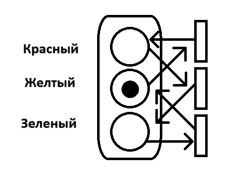
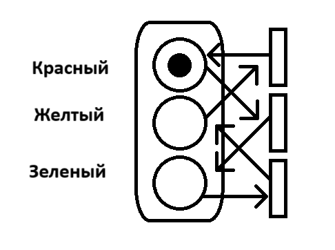

Теория
• Сеть Петри, также известная как сеть позиций/переходов (PT), является одним из нескольких языков математического моделирования для описания распределенных систем. Сети применяются в различных областях, включая информационные технологии (моделирование и анализ производственных процессов, сети передачи данных), производственное управление (моделирование работы производственных линий), биологию (моделирование биохимических процессов в клетках) и другие области, где необходимо анализировать и управлять сложными системами.
• Сеть Петри представляет собой ориентированный двудольный граф, имеющий два типа элементов: позиции и переходы, изображенные в виде кружков и прямоугольников соответственно. Позиция может содержать любое количество фишек, обозначенных маленькими кружками. Переход разрешен, если все позиции, подключенные к нему в качестве входов, содержат хотя бы одну фишку. Переходы срабатывают по очереди в зависимости от их номеров
• Сети Петри были изобретены в августе 1939 года Карлом Адамом Петри в возрасте 13 лет с целью описания химических процессов.
Пример (светофор)
Начальная сеть Петри (X0 = [0, 0, 1]). На светофоре горит тот цвет, в соответствующем множестве которого находится фишка. Сейчас фишка находится в нижнем множестве, соответственно на светофоре горит зеленый свет.
Сеть Петри после 1 итерации (X1 = [0, 1, 0]). Фишка из нижнего множества перешла в центральное. Теперь в нижнем множестве пусто, а в центральном множестве находится фишка, соответственно зеленый свет погас и желтый свет зажегся.
Сеть Петри после 2 итерации (X2 = [1, 0, 0]). Фишка из центрального множества перешла в верхнее. Теперь в центральное множестве пусто, а в верхнем множестве находится фишка, соответственно желтый свет погас и красный свет зажегся.
Сеть Петри после 3 итерации (X3 = [0, 0, 1]). Фишка из верхнего множества перешла в нижнее. Теперь в верхнем множестве пусто, а в нижнем множестве находится фишка, соответственно красный свет погас и зеленый свет зажегся.